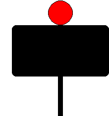

Signalbuch-Online
Signal Sh 2
Schutzhalt und Kennzeichnung von Gleisstellen und Stumpfgleisen.
(1) Bedeutung
Schutzhalt.
(2) Beschreibung
Tageszeichen: Eine rechteckige rote Scheibe mit weißem Rand.
Nachtzeichen: Ein rotes Licht am Tageszeichen oder am Ausleger des Wasserkrans.

Nachtzeichen: Ein rotes Licht am Tageszeichen oder am Ausleger des Wasserkrans.

(3) Verwendung
Das Signal wird verwendet als Wärterhaltscheibe oder als Abschlusssignal eines Stumpfgleises.
(4) Aufstellung
Die Wärterhaltscheibe ist nicht ortsfest.
Ist die Regelaufstellung des Signals Sh 2 nicht möglich, ist es im Gleis aufgestellt.
Ist die Regelaufstellung des Signals Sh 2 nicht möglich, ist es im Gleis aufgestellt.
(5) Wärterhaltscheibe
Die Wärterhaltscheibe wird verwendet zur Kennzeichnung einer Gleisstelle, die vorübergehend nicht befahren werden darf oder zur Kennzeichnung einer Stelle, an der Züge ausnahmsweise anhalten sollen.
(6)
Auf freier Strecke wird die Wärterhaltscheibe in mindestens 50 Metern Sicherheitsabstand vor der zu schützenden Stelle aufgestellt.
(7) Tunnel
Zur Abriegelung eines Gleises im Tunnel oder in dessen Nähe wird die Wärterhaltscheibe außerhalb des Tunnels aufgestellt.
Ausnahmen für lange Tunnel ordnet bei den Eisenbahnen des Bundes der Eisenbahninfrastrukturunternehmer - bei den NE der Betriebsleiter - an.
Ausnahmen für lange Tunnel ordnet bei den Eisenbahnen des Bundes der Eisenbahninfrastrukturunternehmer - bei den NE der Betriebsleiter - an.
(8) Aufheben des Haltauftrags
Der Haltauftrag wird durch Entfernen oder Wegdrehen bzw. Wegklappen des Signals aufgehoben, soweit der Auftrag zur Vorbeifahrt an der Wärterhaltscheibe nicht durch Befehl erteilt wird.
(9) Beleuchtung
Bei ausreichender Außenbeleuchtung oder bei einfachen Verhältnissen wird am Abschlusssignal des Einfahrstumpfgleises nur das Tageszeichen gezeigt.
Das Abschlusssignal übriger Stumpfgleise ist rückstrahlend oder beleuchtet, wenn der Betrieb es erfordert.
Das Abschlusssignal übriger Stumpfgleise ist rückstrahlend oder beleuchtet, wenn der Betrieb es erfordert.